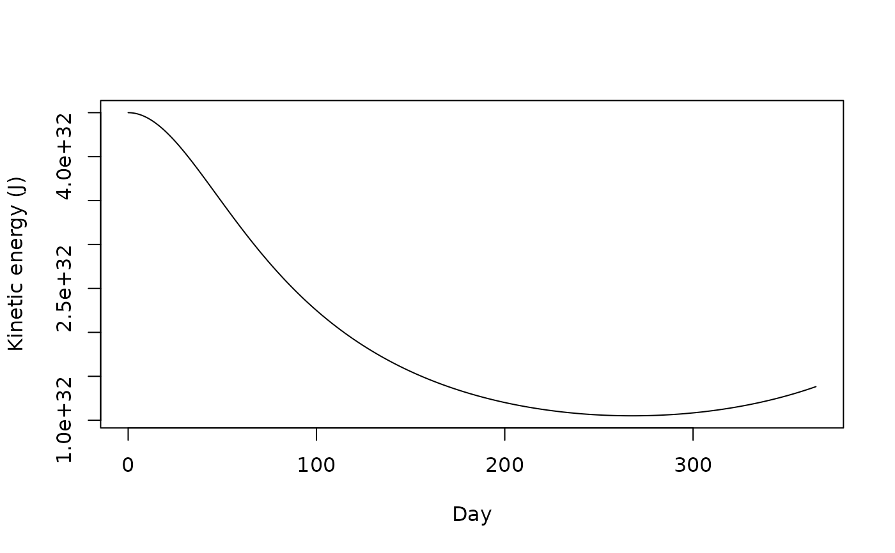

Computes the total kinetic energy, total gravitational potential energy, and their sum at every time step of a simulation. In exact Newtonian gravity the total is constant; with a numerical integrator it is not, and how far it wanders is a direct measure of integration error (see [conserved_quantities()] for the error itself).
Arguments
- sim_data
A tibble output from [simulate_system()].
- G
The gravitational constant the simulation was run with. Defaults to the value recorded by [simulate_system()] in the `"G"` attribute of `sim_data`, or to [gravitational_constant] if that attribute is absent.
- softening
The softening length (in meters) the simulation was run with. The potential energy is computed with the same softened distance, `sqrt(r^2 + softening^2)`, that the force used; if the two do not match, the energy will appear to drift when it has not. Defaults to the value recorded by [simulate_system()], or 0.
Value
A tibble with one row per time step and columns `time`, `kinetic`, `potential`, and `energy`, all in joules.
Details
At each time step, `kinetic` is \(\sum_j \tfrac{1}{2} m_j v_j^2\), `potential` is \(-\sum_{j<k} G m_j m_k / \sqrt{r_{jk}^2 + \varepsilon^2}\) summed over every unordered pair of bodies, and `energy` is their sum. Potential energy is a property of pairs, not of individual bodies, which is why the function reports system totals only.
Examples
# \donttest{
sim <- create_system() |>
add_body("Star", mass = 1e30) |>
add_body("Planet", mass = 1e24, x = 1e11, vy = 30000) |>
simulate_system(time_step = seconds_per_hour * 6,
duration = seconds_per_year)
energy <- get_energy(sim)
energy
#> # A tibble: 1,462 × 4
#> time kinetic potential energy
#> <dbl> <dbl> <dbl> <dbl>
#> 1 0 4.50e32 -6.67e32 -2.17e32
#> 2 21600 4.50e32 -6.67e32 -2.17e32
#> 3 43200 4.50e32 -6.67e32 -2.17e32
#> 4 64800 4.50e32 -6.67e32 -2.17e32
#> 5 86400 4.50e32 -6.67e32 -2.17e32
#> 6 108000 4.50e32 -6.67e32 -2.17e32
#> 7 129600 4.50e32 -6.67e32 -2.17e32
#> 8 151200 4.50e32 -6.67e32 -2.17e32
#> 9 172800 4.50e32 -6.67e32 -2.17e32
#> 10 194400 4.50e32 -6.67e32 -2.17e32
#> # ℹ 1,452 more rows
# Kinetic and potential trade off along the orbit; the total barely moves
plot(energy$time / seconds_per_day, energy$kinetic, type = "l",
xlab = "Day", ylab = "Kinetic energy (J)")

# }